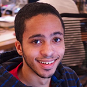

Become a fellow
Over 600 people applied to be Code for America fellows for the 2014 program. Candidates came in from across the country and around the world, and they came with backgrounds ranging from back-end development experience to urban design.
Meet the 2014 fellows
-
Tiffani Bell

Tiffani pursues better living through software. She founded Pencil You In, enabling businesses as far away as Australia to operate more efficiently by accepting appointments online. Tiffani is a front and back-end developer working primarily with Ruby on Rails and iOS. Her latest work includes determining…
-
Maya Benari
Maya is a web designer and developer from Los Angeles. She is passionate about creating beautiful and functional online spaces that make a positive impact on the world. Recently she's developed the NRDC's Demand Clean Power campaign and led the US & Brazil teams to launch a new web presence for the World…
-
Becky Boone
Becky is a software developer from Anchorage, AK. She enjoys volunteering her technical skills locally. This past year she taught free programming classes to women, as well as managed the city's commuter challenge open source project. Becky stays outside in Alaska year round through biking, hiking, and…
-
Tom Buckley

Tom is a researcher and developer focused on urban informatics. He worked in urban planning before hacking on data and doing research and at Geocommons. Since then, Tom consulted for the World Bank, directed research at Casey Trees, taught a graduate class at The New School, and studied Geoinformatics.
-
Tiffany Chu
Tiffany is a designer, user researcher, and urbanist. Prior to CfA, Tiffany was a product manager at Zipcar and an innovation consultant at Continuum. She’s also mapped 100 street vendors in Vietnam, crafted 3D models at Pixar, and written for Dwell. With a background in architecture...
-
Jason Denizac
Jason is a software developer and open source community organizer. He has worked building web and mobile software for healthcare, and has interests in distributed systems and network citizenship. Jason holds a BA in Public Policy from Boise State University which he attended as a National Merit Scholar.…
-
Lyzi Diamond

Lyzi Diamond is a geographic information systems analyst, technical/educational writer, and front-end developer. Most recently, she worked in GIS/technical writing for the Oregon Department of Geology and Mineral Industries. She also helped organize women-focused tech and map-related events in Portland.…
-
Andrew Douglass

Andrew is a web developer and designer from Houston, Texas, where he worked as a web developer for the University of Houston and assisted in operations at RED Labs, the university's startup accelerator. He enjoys exploring problems related to transportation and human equality...
-
Wendy Fong

Wendy is a designer and educator. Recently, she was in Haiti working on a women's crisis call center platform. She's passionate about providing design solutions for non-profits and has collaborated with family services agencies, solar projects in rural Africa, and inner city youth programs. In her spare time she can be found at...
-
Rhys Fureigh
Rhys is a web developer and online strategist who believes technology should be kind to humans. Recent projects have included Friendfactor, SXSW Interactive People’s Choice winner Americans Elect, and organizing Drupal skill-building meetups in New York. Rhys studied sociology at Reed College, toured internationally as a rock guitarist, and loves cargo bikes.
-
Daniel Getelman
Dan is a software developer and entrepreneur from New York City. He dropped out of school to co-found Lore, an education startup that sought to turn classrooms into online communities. He’s a recent grad from the Management and Technology Program at the University of Pennsylvania, where he studied Computer Science and Managerial Analytics.
-
Clara Gonzalez-Sueyro

Clara is a design researcher with a degree in Social Anthropology from The University of Buenos Aires, Argentina. Recently Clara led a project to help foster care youth to better transition into adult life through peer-to-peer networking. She led two web startups as product manager and launched her own non-profit. Never lacking energy her most recent project...
-
Andrea Hansen

Andrea is an optimistic urbanist, data visualizer, and cartography devotee. Her practice, Fluxscape, focuses on data-driven landscapes in post-industrial cities, and she also runs Visualizing Systems, an online catalog that investigates how we map data to understand complex networks. She teaches these…
-
Kavi Harshawat
Kavi is a user experience researcher and designer. Most recently, he has sought to improve civic engagement and bring better user experiences to government through his project GoodCTZN. Previously, Kavi worked at Aardvark and Google, as an early member of the Google team. His interests include food,…
-
Sam Hashemi

Sam is a user experience researcher and designer, most recently with NASA where he led an effort to redesign the 1990s era systems aboard the International Space Station with modern iPad and iPhone apps. Previously, he worked to create Palm's webOS and TouchPad tablet. He holds a Masters in Human-Computer…
-
Jeremia Kimelman

Jeremia is passionate about the intersection of technology and policy. At Tout, he managed the design and development of video product that brought breaking news stories to life for a worldwide audience. Jeremia is a community organizer for Mobile Monday, and has traveled the world promoting technological…
-
David Leonard
David is an ace designer. He recently worked as Digital Design Coordinator for Gannett's Louisville Design studio. He focused on helping Gannett newspapers lead the charge into a digital future with tablet-only publications. He also crafted front pages for the Cincinnati Enquirer, Indianapolis Star and…
-
Jeff Maher

Jeff is from Philadelphia and develops software to improve quality of life. Before joining Code for America, Jeff helped create a web platform for diabetes data at Johnson & Johnson, Reclaim Philly, and a bike parking locator. Jeff enjoys biking and hiking. He studied computer science and journalism…
-
Andrew Maier

A lifelong student of the design community, Andrew co-founded the design publication UX Booth in 2008 to share his journey. He currently serves as its Editor-in-Chief. When he's not heading user-centered design initiatives for startups and corporations, Andrew enjoys reading and writing about design…
-
Molly McLeod
Molly is a graphic designer and media artist who has worked on board games, documentary films, and community murals. Most recently, she designed print and digital projects for federal public health agencies at CommunicateHealth. At Hampshire College, she designed an interdisciplinary concentration in…
-
Amy Mok
Amy is a software engineer with a passion for space and social impact. Most recently, she led a team to identify and implement common designs in flight software to improve productivity in Lockheed Martin. She holds a BA in Computer Science from UC Berkeley and a MS in Software Engineering from Carnegie…
-
Anna-Marie Panlilio

Anna-Marie is a full stack web developer who loves fleshing out vague concepts and turning them into elegant and simple interface designs. When she’s not coding you can find her paddling on the San Francisco Bay or capturing dancers in mid-air with her camera. She studied journalism and urban studies…
-
Maksim Pecherskiy

Maksim is a backend and mobile developer/architect who loves designing and building RESTful web services, complex integrations and apps that use them. Beyond the computer, he loves to travel with his girlfriend, Amy, and their zoo of two dogs and two cats. Maksim holds a B.S. in Information Systems…
-
Erik Schwartz

Erik Schwartz is a long-time developer and partner at Table XI and a musician of the past, present and future. To keep things interesting, he spent the last two years traveling the globe crafting wonderful software from picturesque locations. When it comes right down to it Erik aspires to be both…
-
Giselle Sperber

Giselle is a user experience designer. Over the past eight years she’s worked on technology for classrooms and students, most recently at Amplify in New York. Passionate about healthy communities and good food, she co-founded the Greene Hill Food Co-op, a member owned grocery story in Brooklyn. Giselle holds a B. Arch from Rice University.
-
Ainsley Wagoner

Ainsley is a visual and user experience designer from Lexington, Kentucky. She has a degree in Architecture from the University of Kentucky where she studied installation architecture and methods for the display of contemporary art. She is interested in how design thinking affects the end user, color, pattern, Appalachian instruments...
-
Peter Welte

Peter is a hacker and organizer from Portland, dedicated to advancing environmental and community causes through the use of technology. Committing time to political causes, nonprofits, and advocacy campaigns, he specializes in front-end design and back-end development using Drupal. When not working, he enjoys cross country bicycle touring.
-
Danny Whalen

Danny is a web developer from Phoenix, AZ. His passion is building communities around open source software. He maintains and contributes to a variety of open source projects and helped run his local Ruby user group. Most recently, he crafted web applications at Integrallis Software. Danny studied finance…
-
Drew Wilson
Drew Wilson is a developer, researcher and passionate vegetarian with a love of tech and an interest in using his technical skills to improve communities. Based in Worcester, Massachusetts, Drew comes to the fellowship as the CTO of Compassion Over Killing -- an organization dedicated to exposing cruelty…
-
Livien Yin

Livien is a front-end developer and web designer. Most recently, she apprenticed at Taulia as a user interface engineer. Her passion lies in interactive art, data visualization, and environmental empathy. Livien graduated from Reed College where she made oil paintings and wrote her thesis on urban design in Portland, OR.